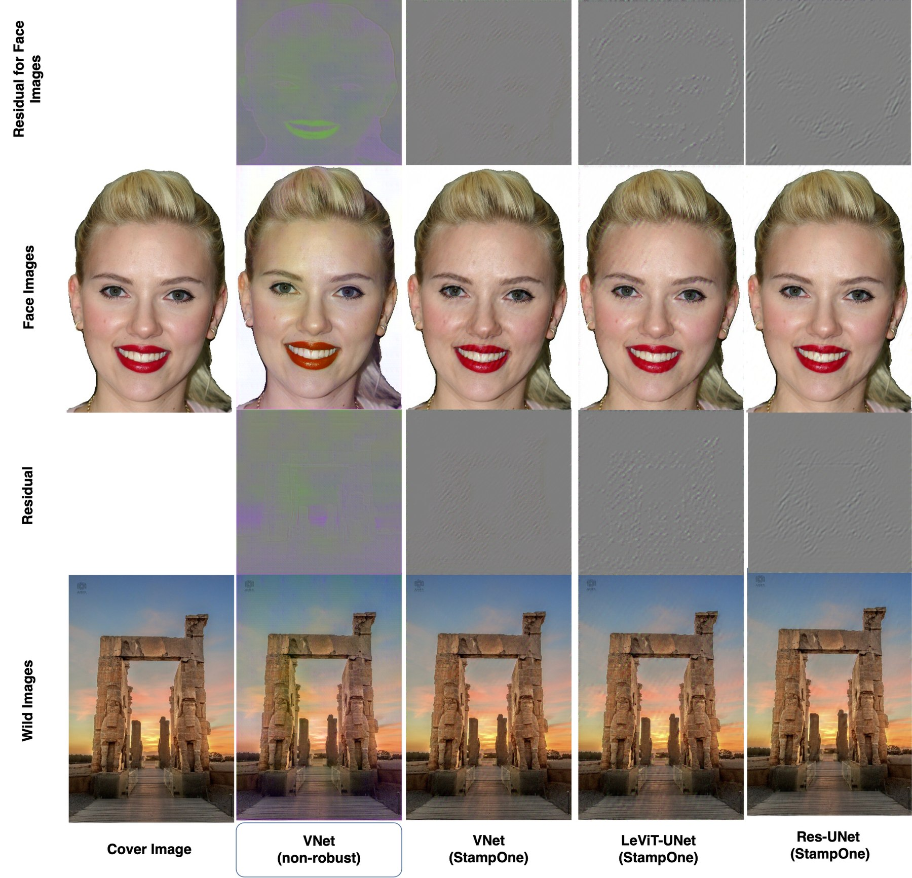
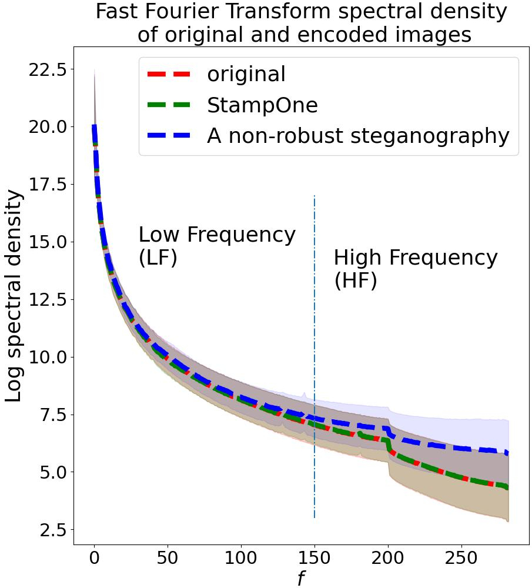
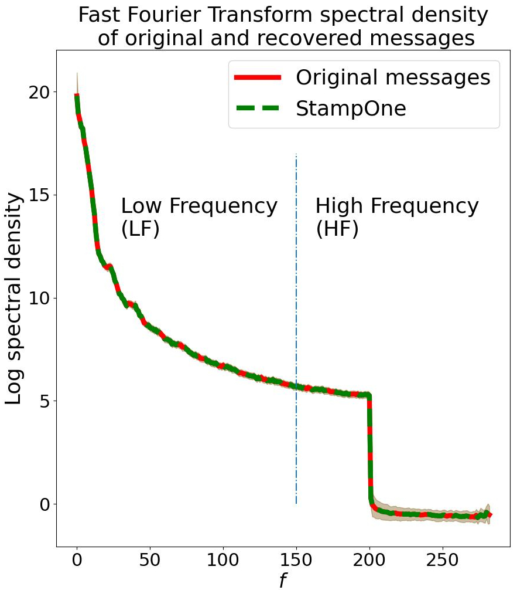
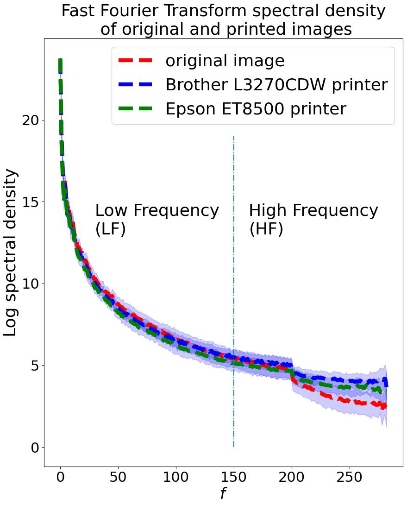
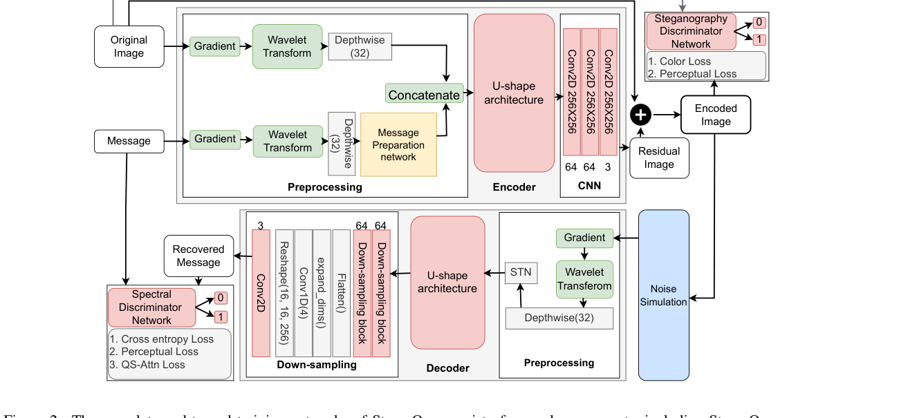
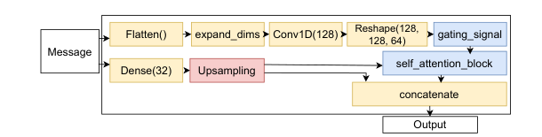
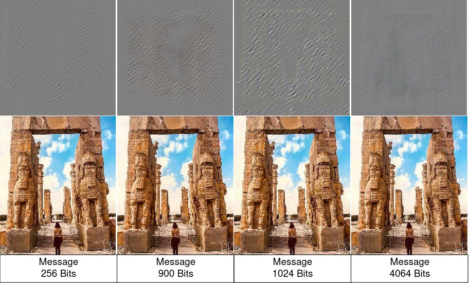

Abstract
Robust steganography and invisible watermarking techniques in printed images are crucial for anti-counterfeiting systems within the multimedia industry — for copyright protection, security of documents (e.g. passports), and brand-protection graphic elements. Conventional steganography models, mainly designed for digital non-lossy media, encounter challenges in recovering messages from images degraded by printing and scanning or social media compression, particularly due to limitations associated with utilizing image regions characterized by the lowest and highest frequencies.
In this paper we introduce StampOne, a novel printer-proof steganography model utilizing Generative Adversarial Networks (GANs). StampOne ensures balanced frequency density between encoder and decoder inputs, reducing disparities between original and encoded images. Our method, through integration with diverse U-shape networks (image-to-image), emphasizes the significance of frequency domain analysis in robust steganography. It facilitates the development of robust steganography models capable of withstanding diverse noise types, including JPEG compression, contrast variations, brightness fluctuations, aliasing, blurring, and Gaussian noise. It surpasses previous models in both the quality of encoded images and printer-proof capabilities.
Why frequency balance matters
Steganography GANs, like most GANs, struggle to reproduce the high-frequency content of natural images — and printing/scanning further reshapes that spectrum. StampOne's preprocessing (gradient + wavelet transform) explicitly balances the frequency density the encoder and decoder are asked to learn, instead of leaving it to chance.



Method
In summary, the main contributions of this work are:
- A gradient + wavelet preprocessing pipeline that converts the cover image and the message into a consistent, frequency-normalized representation for both the encoder and the decoder — independent of which U-shape backbone is used.
- A treatment of the frequency-density balance problem in GANs that yields better decoding accuracy and higher perceptual quality of encoded images.

Encoder
The 256-bit message is reshaped into a 16×16 grayscale map, converted to RGB, and — like the cover image — passed through a gradient operation and a Haar wavelet transform (5 sub-bands, 3 channels each). A Depthwise layer weighs each wavelet sub-band before the Message Preparation Network (MPN) merges the message into a representation compatible with the cover image's frequency space. Both streams are concatenated and fed to a U-shape network, followed by a 3-layer CNN block that produces the residual added to the cover image.

U-shape backbone
StampOne's preprocessing is backbone-agnostic: the paper evaluates it with UNet, VNet, Eff-UNet, LeViT-UNet, ResUNet, Swin-UNet, Attention-UNet, Attention-VNet, and UNet++. The two configurations reported in the results below are M1 (Attention‑VNet) and M2 (UNet++).
Decoder
The decoder mirrors the encoder's preprocessing, but adds a Spatial Transformer Network (STN) before the gradient/wavelet stage to correct for warping and rotation introduced by printing and camera capture. After the U-shape network, a CNN down-sampling stack (sized to the message length) and a final Conv2D with a Snake activation recover the hidden bits, which are error-corrected with BCH codes.
Discriminators & losses
A steganography discriminator (Wasserstein loss) keeps the encoded image close to the cover image using color-histogram and LPIPS perceptual losses. A spectral discriminator, inspired by SWAGAN but operating on the FFT rather than the wavelet domain, is trained jointly to push the decoder to reproduce high-frequency message content, combined with cross-entropy and QS-Attn contrastive losses.
Noise simulation
During training, encoded images are perturbed with JPEG compression, Gaussian noise, affine and perspective warp, sharpening, color dithering, medium blur, and random brightness/contrast/hue shifts — simulating digital, camera-sensor, and printer degradation so the decoder learns to survive them.
Results
StampOne hides 256 bits in a 256×256×3 image (0.13×10-2 bpp) — roughly 10× the capacity of Code Face and StegaStamp, and can scale up to 4096 bits. M1 (Attention-VNet) and M2 (UNet++) are compared against StegaStamp, Code Face, RoSteALS, and a non-robust baseline (M3, two Attention-VNets with no frequency preprocessing).
Encoded image quality & printed decoding (40 face photos, Samsung S22 Ultra)
| Method | Encoded image quality | Bit acc. (%) on printed VGGFace2 photos | ||||||
|---|---|---|---|---|---|---|---|---|
| SSIM ↑ | LPIPS ↓ | ColorHisto ↓ | 6×6 cm | 5×5 cm | 4×4 cm | 3×3 cm | 2×2 cm | |
| StegaStamp | 0.93 | 4.92 | 6.11 | 78 | 72 | 70 | 65 | 48 |
| Code Face | 0.95 | 3.06 | 7.32 | 55 | 55 | 50 | 38 | 15 |
| StampOne (M1) | 0.98 | 1.25 | 5.38 | 100 | 100 | 100 | 95 | 62 |
| StampOne (M2) | 0.96 | 2.74 | 6.30 | 88 | 85 | 72 | 63 | 43 |
| Non-robust (M3) | 0.92 | 1.04 | 2.80 | 0 | 0 | 0 | 0 | 0 |
| RoSteALS | 0.95 | 0.04 | 0.09 | 0 | 0 | 0 | 0 | 0 |
Values shown are means (std. devs. omitted here — see paper Table 1). ↑ higher is better, ↓ lower is better. RoSteALS scores best on LPIPS/ColorHisto but recovers 0% of messages once printed.
Robustness to digital noise (1000 COCO test images)
| Method | JPEG quality (%) | Gaussian noise (std) | Downscaled resolution (px) | ||||||
|---|---|---|---|---|---|---|---|---|---|
| 70 | 60 | 50 | 0.08 | 0.06 | 0.04 | 60² | 80² | 100² | |
| StegaStamp | 100 | 100 | 100 | 100 | 100 | 100 | 55 | 80 | 91 |
| Code Face | 80 | 88 | 88 | 55 | 75 | 86 | 2 | 11 | 36 |
| RoSteALS | 87 | 90 | 94 | 23 | 35 | 53 | 96 | 97 | 98 |
| StampOne (M1) | 100 | 100 | 100 | 98 | 100 | 100 | 74 | 98 | 100 |
| StampOne (M2) | 97 | 99 | 100 | 88 | 96 | 99 | 72 | 94 | 99 |
| Non-robust (M3) | 0 | 0 | 0 | 13 | 46 | 84 | 0 | 0 | 22 |
Robustness to contrast & brightness shift
| Method | Contrast (0–1) | Brightness (-1 to 1) | |||
|---|---|---|---|---|---|
| 0.05 | 0.1 | 0.15 | -1 | 1 | |
| StegaStamp | 2 | 39 | 77 | 100 | 100 |
| Code Face | 0 | 1 | 30 | 90 | 90 |
| RoSteALS | 20 | 67 | 85 | 91 | 95 |
| StampOne (M1) | 100 | 100 | 100 | 100 | 100 |
| StampOne (M2) | 100 | 100 | 100 | 100 | 100 |
| Non-robust (M3) | 0 | 0 | 15 | 0 | 0 |
Message capacity vs. image quality (StampOne, Attention-VNet)
| Message size | SSIM ↑ | LPIPS ↓ | ColorHisto ↓ |
|---|---|---|---|
| 256 bits | 0.98 | 1.25 | 5.38 |
| 900 bits | 0.94 | 5.2 | 10.0 |
| 1024 bits | 0.92 | 4.14 | 8.7 |
| 4096 bits | 0.91 | 11.1 | 14.2 |

Datasets
Training used subsets of COCO (∼123k images) and DeepFashion (∼800k images). Digital-noise evaluation used 1000 held-out COCO images; printer-proof evaluation used BSDS500 and Urban100 (natural/urban scenes) and VGGFace2 (40 face images, printed and photographed with a Brother L3270CDW printer and a Samsung S22 Ultra).
Code
The reference implementation is published as the stampone Python package with an
encoder/decoder pair you can install and import directly.
pip install stamponefrom stampone import encoder, decoder
# CLI entry points, once installed:
# stampone-encode --original_images ./images/ --message "hello"
# stampone-decode --encoded_images ./results/Encoded_images/Full source, model details, and setup instructions are on GitHub → farhadsh1992/StampOne. Pretrained encoder/decoder weights are available on request, send an email to farhadsh1992@gmail.com.
✉️ Request Pretrained WeightsBibTeX
@inproceedings{shadmand2024stampone,
title = {StampOne: Addressing Frequency Balance in Printer-proof Steganography},
author = {Shadmand, Farhad and Medvedev, Iurii and Schirmer, Luiz and Marcos, Jo\~{a}o and Gon\c{c}alves, Nuno},
booktitle = {Proceedings of the IEEE/CVF Conference on Computer Vision and Pattern Recognition Workshops (CVPRW)},
pages = {4367--4376},
year = {2024}
}